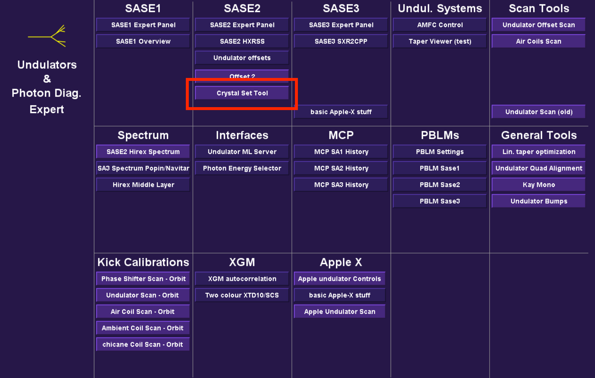
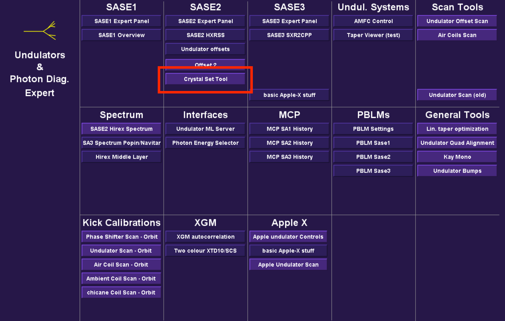

Virtual Diagnostics at EuXFEL
Short Pulse Workshop, 21.11.2022
Christian Grech, MXL
Outline
- Introduction
- What is a Virtual Diagnostic?
- Machine Learning based Virtual Diagnostics
- The EuXFEL case
- Machine Learning Pipeline
- Challenges and Future Prospects
Introduction
- 1.
What is a Virtual Diagnostic?

ML-based Virtual Diagnostics
 


The EuXFEL case
- HXRSS setup at 12.4 keV.
- Increments of 0.5 eV with 10 second pauses.
- Increasing pause time to 100 s.
- Decreasing steps over 100 eV.
- Total durations ranging between 10 - 30 minutes.
Machine Learning Pipeline

Machine Learning Pipeline
Machine Learning Pipeline

Machine Learning Pipeline